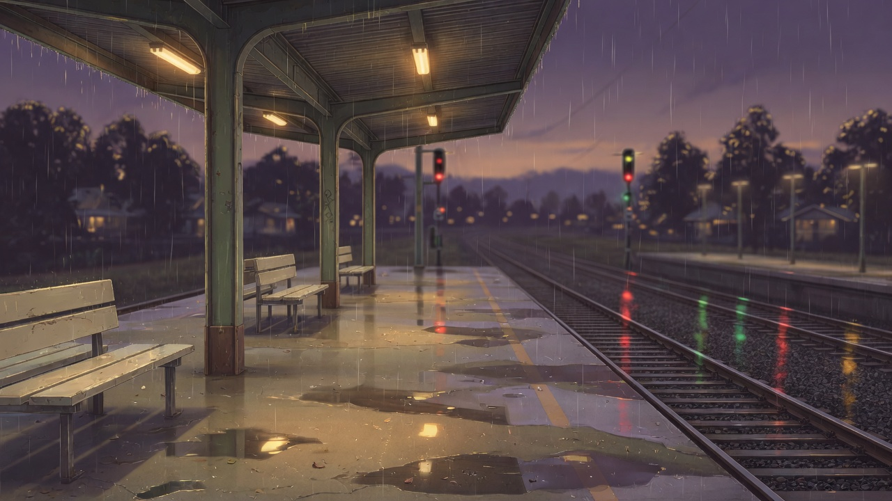
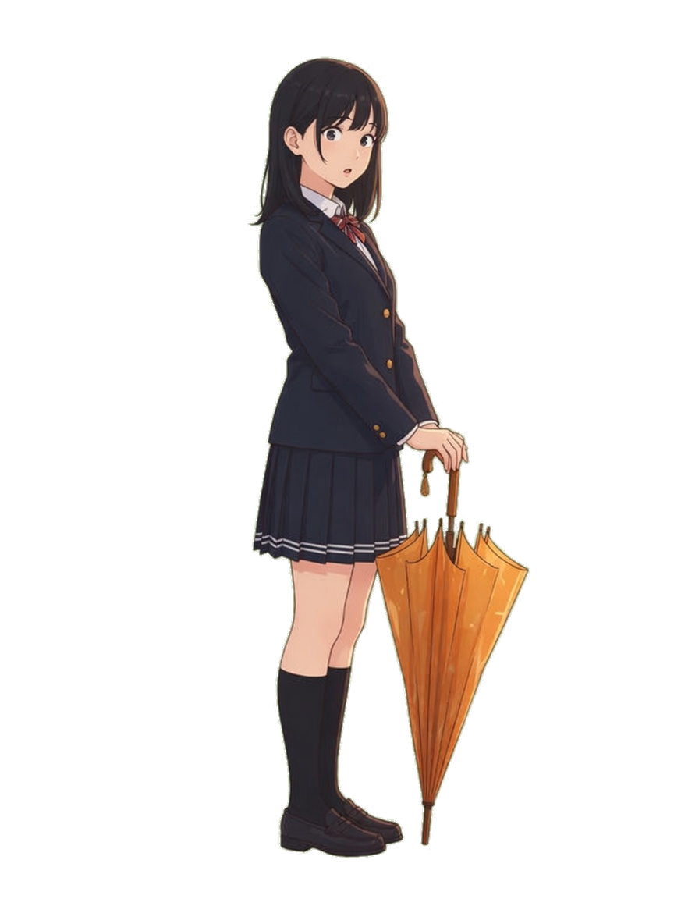

지난번에 제가 NODE·MAP·ROUTE·STAGE라고 줄여 쓴 것들을 실제 화면과 예시로 풀었습니다. 예시 작품 하나를 처음부터 끝까지 같이 씁니다 — 비 오는 플랫폼에서 우산을 안 가져온 날.
디스크에 있는 JSON 그래프가 유일한 진실입니다. 네 표면은 그 하나를 네 가지 배율로 보는 창일 뿐이고, 어느 창에서 고쳐도 같은 파일에 씁니다.
씬 하나를 소설처럼 위에서 아래로 읽고 씁니다. 기본 작업 화면.
문단을 쓰는 곳. 하루 중 90%를 여기서 보냅니다.
씬이 상자, 갈래가 선. 이야기의 골격만 봅니다.
구조를 볼 때만 엽니다. 초보자의 첫 화면이 아닙니다.
갈래를 하나 고정하고 여러 노드를 이어 한 편의 소설로 읽습니다.
페이싱·중복·감정선을 잡을 때. 에디터에 없던 표면.
커서가 놓인 그 순간을 플레이어가 보는 대로 그립니다.
읽기 전용. 여기서는 편집하지 않습니다.
NODE·ROUTE는 소설 쪽이고 MAP은 노드 쪽입니다. "노드 + 소설"이라고 하신 게 이 둘을 한 제품 안에서 같은 데이터의 두 배율로 놓는다는 뜻이라고 이해했습니다. STAGE는 그 결과를 확인하는 거울입니다.
추상적으로 설명하면 또 말장난이 됩니다. 노드 하나, 캐릭터 하나, 갈래 하나로 된 최소 작품을 놓고 네 표면을 차례로 보여드립니다.
| 항목 | 값 |
|---|---|
| 작품 | 우산을 안 가져온 날 · 한국어 · 4노드 · 1갈래 |
| 노드 | platform-01 비 오는 플랫폼share-umbrella 우산을 같이 쓴다walk-alone 혼자 걷는다next-morning 다음 날 아침 |
| 캐릭터 | 유리 — 같은 반. 담담한 말투. 색: gold 나 — 화자. 이름 없는 1인칭 나레이션 |
| 배경 | bg platform_rain — 위 히로 이미지 |
| 스프라이트 | yuri neutral / yuri surprised |
배경과 스프라이트는 grok image_gen으로 만들고, 표정은 정본 스프라이트에서 image_edit으로 파생시켰습니다. 방법론은 docs/grok-imagine.md.
유리 · 17세 · 같은 반
말이 짧고 감정을 설명하지 않는다. 질문으로 되받는다. 상대가 곤란해하면 화제를 돌린다.
neutral surprised
에이전트가 매 턴 받는 컨텍스트의 일부입니다. 대사 톤은 여기서 나옵니다 — 프롬프트에 매번 다시 적지 않습니다.
왼쪽 좁은 열이 거터입니다. 배경·스프라이트·소리 같은 연출이 여기 작은 칩으로 붙습니다. 오른쪽 넓은 열이 본문입니다. 대사와 나레이션만 있습니다. show yuri neutral 같은 코드 줄이 본문을 끊지 않는 게 요점입니다.
— 씬이 여기서 시작합니다
우산을 안 가져온 날은 늘 이런 식이다. 개찰구를 나서자마자 비가 쏟아졌고, 플랫폼 지붕 아래는 이미 사람으로 반쯤 차 있었다.
— 유리가 등장합니다
"안 가져왔지, 우산."
대답할 말을 고르는 동안 유리는 접힌 우산을 손목으로 두 번 흔들었다. 물어본 게 아니라 확인이었다.
— 빗소리가 깔립니다

유리 놀람— 표정이 바뀝니다
"왜 그렇게 봐?"
배경 전환, 스프라이트 등장·퇴장·표정 변경, 음악과 효과음, 변수 대입. 전부 타입이 있는 연출이고, 클릭하면 인라인 편집기가 열립니다. 썸네일이 붙으니 "지금 화면에 누가 있는지"를 글로 추적할 필요가 없습니다.
대사와 나레이션. 문단 앞의 화자 칩이 누가 말하는지 정합니다 — 산문에서 추론하지 않습니다. 추론은 여기서 재앙입니다. 나레이션은 화자 없는 문단이고, Ren'Py의 화자 없는 say로 그대로 나갑니다.
비전 문서의 초보자 화면(스테이지 + 스토리보드 카드)과 위의 산문 뷰는 다른 구현이 아닙니다. 같은 블록 리스트를 두 밀도로 그리는 것입니다. 토글 하나. 데이터는 동일.
우산을 안 가져온 날은 늘 이런 식이다. 개찰구를 나서자마자 비가 쏟아졌고, 플랫폼 지붕 아래는 이미 사람으로 반쯤 차 있었다.
유리 "안 가져왔지, 우산."
대답할 말을 고르는 동안 유리는 접힌 우산을 손목으로 두 번 흔들었다. 물어본 게 아니라 확인이었다.
유리 "왜 그렇게 봐?"
썸네일이 좌측 거터의 작은 색 점으로 접힙니다. 점을 누르면 그 자리에서 펼쳐집니다. 같은 분량의 씬인데 화면당 읽히는 글자 수가 두 배 이상 차이납니다.
여기가 가장 틀리기 쉬운 지점입니다. 산문을 자유 텍스트로 두고 파서로 구조를 뽑으려 하면, .rpy 왕복이 죽은 것과 똑같은 이유로 죽습니다 — 표현할 수 없는 입력이 무한히 들어옵니다. 그래서 산문 뷰는 파서가 아니라 투영입니다. 문단을 타이핑하면 비트가 생기고, 비트가 바뀌면 문단이 다시 그려집니다.
배경 · 비 오는 플랫폼
우산을 안 가져온 날은 늘 이런 식이다.
유리 · 담담 · 가운데
유리 "안 가져왔지, 우산."
// story/nodes/platform-01.json { "id": "platform-01", "title": "비 오는 플랫폼", "beats": [ { "op":"scene", "bg":"platform_rain" }, { "op":"narrate", "text":"우산을 안 가져온…" }, { "op":"show", "who":"yuri", "expr":"neutral", "at":"center" }, { "op":"say", "who":"yuri", "text":"안 가져왔지, 우산." } ] }
# game/platform-01.rpy — 생성물 label platform_01: scene bg platform_rain "우산을 안 가져온 날은 늘…" show yuri neutral at center yuri "안 가져왔지, 우산."
단방향입니다. IR이 Ren'Py의 의도적 부분집합이라서 되돌리지 않습니다. 손으로 쓴 임의의 .rpy에는 Python 블록·screen·ATL·런타임 등록 문장이 들어갈 수 있고, 열 개 남짓한 op으로는 표현할 수 없습니다.
이 계약이 왜 중요한가. 리서치에서 측정치로 나온 게 두 개 있습니다. 내용을 JSON 도구 인자에 밀어넣으면 품질이 떨어지고 strict 스키마도 못 고칩니다. 반대로 추론과 형식을 분리해서 산문으로 먼저 쓰게 하고 값싼 모델이 타입 op으로 변환하면 형식 오류가 측정된 모든 조합에서 0이 됩니다. 즉 모델이 서사를 잘 쓰는 표현과 작가가 읽기 편한 표현이 같습니다. 산문은 UI 껍데기가 아니라 사람과 모델이 공유하는 표현 계층입니다.
노드는 씬 파일 하나입니다. 엣지는 산문 속 링크가 아니라 타입이 있는 연결입니다 — jump이거나 menu의 한 갈래. 그래서 이름을 바꾸면 참조가 따라 바뀌고, 끊어진 엣지는 컴파일 전에 걸립니다.
갈래가 몇 개인가. 어디서 합류하는가. 아직 비어 있는 씬은 어디인가(혼자 걷는다 · 비트 0). 도달 불가능한 노드가 있는가. 변수가 어느 갈래에서 갈리는가. 전부 구조 질문이고, 산문으로는 절대 안 보입니다.
재미있는가. 이 대사가 유리답게 들리는가. 여기서 호흡이 늘어지는가. 같은 말을 두 번 했는가. 그래서 MAP만 있는 도구는 작가에게 불친절합니다 — 상자 안의 글을 읽을 수가 없으니까요. 그게 ROUTE가 필요한 이유입니다.
작품 전체를 소설로 읽는 건 원리적으로 불가능합니다. 분기가 있으니까요. 그런데 작가가 실제로 원하는 건 그게 아닙니다. 한 경로를 이어서 읽고 싶은 겁니다. menu에서 선택을 고정하면 경로가 정해지고, 여러 노드의 산문이 한 편으로 이어집니다. 각 문단이 자기 노드 id를 들고 있으니 여기서 고쳐도 원래 파일에 씁니다.
우산을 안 가져온 날은 늘 이런 식이다. 개찰구를 나서자마자 비가 쏟아졌고, 플랫폼 지붕 아래는 이미 사람으로 반쯤 차 있었다.
유리 "안 가져왔지, 우산."
대답할 말을 고르는 동안 유리는 접힌 우산을 손목으로 두 번 흔들었다. 물어본 게 아니라 확인이었다.
유리 "왜 그렇게 봐?"
우산은 생각보다 작았다. 어깨를 붙이고 걷는데도 한쪽은 계속 젖었고, 유리는 그걸 아는 것 같았지만 우산을 기울이지 않았다.
유리 "네 쪽이 젖는 게 낫겠지. 나는 감기 걸리면 시끄러워."
무슨 뜻인지 물으려다 말았다. 빗소리가 대화를 대신 메워줬다.
다음 날, 사물함 위에 접힌 우산이 놓여 있었다. 어제 그 우산이었다. 쪽지는 없었다.
페이싱이 보입니다. 나레이션이 세 문단 연속이면 눈에 걸립니다. 같은 비유를 두 번 쓴 것도 보입니다. 그리고 노드 경계가 옅은 선으로만 표시되니, 씬 나누기가 잘못된 곳이 읽다가 걸려서 드러납니다 — MAP에서는 상자가 예쁘게 보였던 자리입니다.
다만 전부 던지면 안 됩니다. 리서치의 절제 실험에서 아티팩트 전체를 보여주면 100줄 창보다 오히려 나빴습니다(18.0 → 12.7, 상대 −29%). 그래서 조립 규칙은 현재 노드 산문 전문 + 직전 1홉 요약 + 경로 한 줄 시놉시스 + 압축 캐릭터 바이블입니다. ROUTE는 사람이 읽는 표면이고, 에이전트는 그것의 창을 받습니다.
위 NODE 화면에서 금색으로 선택된 블록이 유리의 첫 대사였습니다. STAGE는 정확히 그 순간을 그립니다. 커서를 아래로 옮기면 화면도 따라 바뀝니다. 편집은 하지 않습니다 — 읽기 전용 거울입니다. 그리고 이 런타임이 웹 익스포트에서 돌아가는 것과 같은 코드입니다.
유리
"안 가져왔지, 우산."
배경 image_gen · 스프라이트 image_gen 후 알파 컷아웃 · 표정 image_edit으로 정본에서 파생. 자산 파이프라인이 실제로 이렇게 돕니다.
이 모델이 작동하려면 작가가 제안을 읽을 수 있어야 합니다. JSON 패치는 작가가 못 읽습니다. 산문 문단 diff는 읽습니다. 그래서 노드+소설은 UX 취향이 아니라 이 제품이 성립하는 조건입니다. 아래는 "플랫폼 도착 직후의 호흡을 늘려줘"에 대한 응답입니다 — 디스크에는 아직 아무것도 쓰이지 않았습니다.
우산을 안 가져온 날은 늘 이런 식이다. 개찰구를 나서자마자 비가 쏟아졌고, 플랫폼 지붕 아래는 이미 사람으로 반쯤 차 있었다.
우산을 안 가져온 날은 늘 이런 식이다. 개찰구를 나서는 순간 비가 쏟아졌다. 플랫폼 지붕 아래로 뛰어들었을 때는 셔츠 어깨가 이미 젖어 있었고, 지붕 밑은 사람으로 반쯤 차 있었다.
한 문장을 둘로 쪼개고 몸의 감각을 하나 넣었습니다 · 47자 → 78자
소리 · 비 · 반복 · 페이드인 1.5초
유리가 등장하기 전에 빗소리를 먼저 깔면 그 침묵이 길어집니다 · 자산 audio/rain.ogg 없음 → 플레이스홀더로 추가됩니다
대답할 말을 고르는 동안 유리는 접힌 우산을 손목으로 두 번 흔들었다. 물어본 게 아니라 확인이었다.
대답할 말을 고르는 동안 유리는 접힌 우산을 손목으로 두 번 흔들었다.
뒷문장이 앞을 설명해버립니다 — 독자가 알아챌 여지를 남기는 쪽을 제안합니다
셋 중 첫째만 받고 둘째를 버릴 수 있습니다. 전부 받거나 전부 버리는 제안은 실제로는 항상 버려집니다. 수락한 것만 원자적으로 디스크에 쓰이고(temp + rename), 그 순간까지 IR은 손대지 않은 상태입니다.
"이상한 JSON이 들어왔다"가 아니라 "이 문장이 마음에 안 든다"가 됩니다. 후자는 작가가 판단할 수 있는 종류의 실패입니다. 도구 경계에서 스키마 검증하고 무효 편집을 버리는 것만으로도 절제 실험에서 15.0% → 18.0%(상대 +20%)였습니다 — 검증은 UX가 아니라 성능입니다.
이게 IR 스키마를 확정하기 전에 정해야 하는 가장 큰 하나입니다. 위 NODE 화면에서 저는 menu를 노드 안에 인라인으로 그렸습니다. 다른 선택도 가능합니다.
한 노드가 비트 여러 개와 갈래 하나를 함께 갖습니다. 짧은 선택지 때문에 노드가 늘어나지 않습니다.
menu를 만나면 노드가 끝납니다. 선택지 하나가 곧 새 노드 하나입니다.
제 기울기는 A입니다. 노드는 "씬 파일"이 아니라 "작가가 한 번에 읽는 덩어리"로 재정의하고, 갈래는 그 안에 살 수 있게 둡니다. 그래야 소설로 읽히니까요. 대신 MAP은 노드 안의 menu를 상자 하단의 여러 출구 포트로 그려서 구조를 잃지 않습니다. 이걸 확정해야 edges.json의 모양이 정해집니다.
| 질문 | 지금 제 생각 |
|---|---|
| 첫 화면 | NODE 산문. MAP은 탭 또는 우측 미니맵으로 접어둡니다. 비전 문서는 3단 + 그래프를 앞세웠는데, 노드+소설로 가면 초기 화면이 바뀝니다. |
| 배경 전환 위치 | 비트 순서는 선형인데 산문에서는 문단 경계에 걸칩니다. 거터 칩을 문단 사이의 독립 행으로 두는 게 위 목업이고, 모호함이 남습니다. |
| raw Ren'Py | 회색 잠긴 블록으로 통과. 시각 편집 차단, 컴파일러는 그대로 흘려보냄. 확장 지점은 game/user/*.rpy — 컴파일러가 절대 쓰지 않는 폴더. |
| ROUTE 성능 | 가상 스크롤. 경로가 100노드면 산문이 수만 자입니다. |
| 표정 없을 때 | 거터에 정본 스프라이트 썸네일 + 표정 이름만. 플레이스홀더 스튜디오가 v1입니다. |
| 용어 | 뜻 |
|---|---|
| NODE | 씬 하나를 산문으로 읽고 쓰는 표면. 기본 작업 화면. 좌측 거터 + 우측 본문 2열. |
| MAP | 노드가 상자, 갈래가 선인 그래프 표면. 구조 전용. |
| ROUTE | 갈래를 고정해 여러 노드를 이어 한 편의 소설로 읽는 표면. 페이싱·중복 검사용. |
| STAGE | 커서 위치의 순간을 플레이어 화면으로 그리는 읽기 전용 프리뷰. 웹 익스포트와 같은 런타임. |
| 블록 | 산문 뷰의 한 줄 단위. 블록 하나 = 비트 op 하나. 파싱하지 않고 투영합니다. |
| 비트 op | IR의 최소 단위. scene show hide say narrate play stop pause set jump menu raw 등. 이름은 Ren'Py를 따릅니다. |
| 거터 | 산문 본문 왼쪽의 좁은 열. 연출 비트(배경·스프라이트·소리·변수)가 칩으로 붙는 자리. |
| 화자 칩 | 문단 앞의 캐릭터 표식. 누가 말하는지를 정합니다 — 산문에서 추론하지 않습니다. |
| 밀도 토글 | 같은 블록 리스트를 카드 밀도(썸네일 크게) / 산문 밀도(색 점으로 접기)로 바꿔 보는 스위치. |
| 제안 카드 | 에이전트의 편집 제안. 산문 diff로 보이고, 카드 단위로 수락·거절합니다. 수락 전까지 디스크는 그대로. |
| IR | 디스크의 JSON 스토리 그래프. 유일한 진실. story/nodes/*.json + story/edges.json. |
| emit | IR → .rpy 단방향 컴파일. 되돌리지 않습니다 — IR은 Ren'Py의 의도적 부분집합입니다. |
vnmaker · 브레인스토밍 문서 · 2026-08-31 · 선행 문서 docs/vision/index.html (W0)
이 문서의 배경·스프라이트는 grok CLI image_gen / image_edit으로 생성했습니다. 차트·다이어그램·목업은 전부 코드로 만들었습니다 — 정확한 글자와 구조가 필요한 것은 이미지 모델에 맡기지 않습니다.